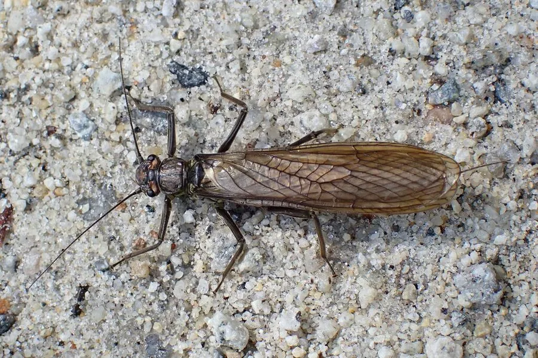

昆虫 · 动物界
石蝇 Perla marginata

幼虫生活在清洁溪流石缝中的襀翅目昆虫，成虫翅膀平铺、外形古朴，对水质污染敏感，是水质监测的指示物种。
- 分类
- 门节肢动物门纲昆虫纲目襀翅目科石蝇科属石蝇属
- 栖息环境
- 清洁、溶氧充足的溪流和河流，幼虫藏在石缝和砾石间
- 地理分布
- 欧洲及亚洲部分地区的山区溪流，中国山区有近似种类分布
- 保护级别
- 暂无评估
物种志
石蝇成虫体长 20–30 mm，体色黄褐或黑褐，翅面有网状脉，停息时翅膀平铺在背上；尾须短。它的外形古朴，飞行能力不强，常停在水边的石头上。
石蝇分布于欧洲及亚洲部分地区的清洁溪流。幼虫水生，生活在石缝和砾石之间，捕食小型水生昆虫，需要 1–3 年才能完成发育；成虫多在春季羽化，寿命较短，主要任务是繁殖。幼虫对水质污染非常敏感，是国际通用的水质监测指示生物。它与石蛾、蜉蝣一起被称为水质监测的“EPT”三大类群，水体中这三类昆虫的种类和数量常被用来评价水质等级。目前它没有IUCN 的正式评估，中国未将其列入国家重点保护野生动物名录。
形态与习性
- 食性幼虫捕食小型水生昆虫，成虫口器退化
- 体长20–30 mm
- 幼虫栖息溪流石缝和砾石之间
- 生活史幼虫水生，需 1–3 年完成发育
- 水质指示对污染敏感，是国际通用的水质监测指示生物
- 成虫翅膀平铺在背上，飞行能力不强
趣味知识
- 石蝇幼虫生活在清洁溪流的石缝中，对污染非常敏感。
- 它和石蛾、蜉蝣一起被称为水质监测的“EPT”三大类群。
- 石蝇成虫的翅膀平铺在背上，外形古朴。